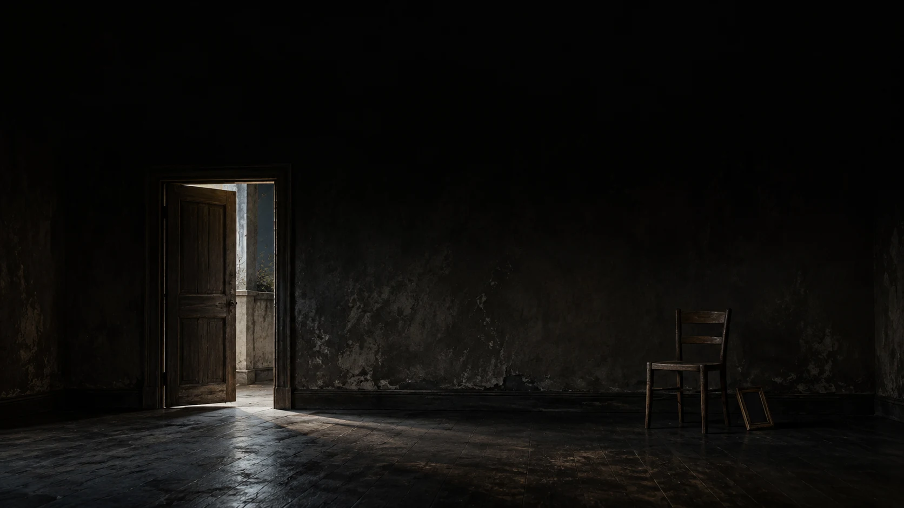

절대 유지할 얼굴 · 톤 · 설정
매체는메시지의 몸
이미지에서 웹툰으로,
웹툰에서 영상으로.
그리고 생성형 AI까지 이어지는 한 문장으로 시작한다.

하나의 이야기. 서로 다른 감각.
왜 같은 이야기가이미지에선 살고영상에선 죽는가?
매체를 바꾸면 메시지의 몸도 바뀐다.
몸을 모르고 변환하면 결과는 쉽게 무너진다.
네 정거장으로한 뿌리를 본다
질문에서 시작해 개념을 세우고,
이미지 · 웹툰 · 영상에 적용한 뒤 AI 시대의 승인 원칙으로 닫는다.
- 01질문왜 실패하는가
- 02개념메시지의 몸이란
- 03매체이미지 · 웹툰 · 영상
- 04판단AI와 인간의 역할
영상 언어의 하이어라키
프로젝트에서 컷까지 내려가는 구조를 먼저 본다.
뒤의 모든 개념은 이 지도 위에 놓인다.
도구는 폭발했다그런데 기억에 남는 건 줄었다
누구나 이미지와 영상을 뽑아내지만,
메시지 구조가 없으면 결과물은 빨리 사라진다.
∞
생성 도구
0
남은 메시지?
도구를 몰라서실패하지 않는다
실패의 핵심은 프롬프트 기술 부족이 아니라 메시지 구조 부재다.
표면부터 시작하면 예쁘지만 비어 있다.
False프롬프트를 더 배우면 해결된다
True메시지 구조가 없어서 실패한다
메시지의 몸= 단문 인과 체인
오늘의 심장이다.
메시지는 한 줄이 한 판단인 문장들의 사슬로 먼저 존재한다.
MESSAGE BODY
한 문장→한 판단→한 비트
한 문장한 판단한 비트
줄마다 판단 하나다.
한 줄만 바뀌어도 이야기가 바뀐다.
이 체인이 매체에 독립적인 원본이다.
쇼트는 시선의 그릇 비트는 인식 변화다
물리적 컷이 없어도 한 쇼트 안에서 관객의 인식은 여러 번 전환된다.
쉼표로 묶으면판단이 뭉개진다
한 덩어리 문장은 어디를 고쳐야 할지 보이지 않는다.
비트로 쪼개야 수정 가능해진다.
문을 열고 방을 보고 놀라 비명을 질렀다
판단을 분리하면, 고칠 곳이 보인다.- 01문을 연다
- 02본다
- 03놀란다
- 04물러선다
- 05비명
요약은 덜어낸다함축은 한 단위에 살린다
요약은 내용을 줄이고,
함축은 핵심을 한 단위 안에 살아 있게 압축한다.
매체는 전부 함축의 기술이다.
SUMMARY / 요약
상황판단감정관계
덜어내기
IMPLICATION / 함축
상황판단감정관계
한 단위 안에 살아 있게
KeepMutateAvoid
구조보다 먼저 고정한다.
스타일은 앵커를 덮을 수 없다.
AI 작업에서 가장 자주 무너지는 지점이다.
변주해도 되는 표면
무너지면 안 되는 금지선
렌더 수는목표가 아니다
그림 수,
컷 수,
쇼트 수는 이해의 결과다.
담기면 함축하고,
안 담기면 분할한다.
START WITH판단
담기면 함축
안 담기면 분할
같은 체인을매체의 본성으로함축한다
이미지는 공간,
웹툰은 공간과 여백,
영상은 공간과 시간을 더한다.
압축이 점점 풀리는 순서다.
이미지공간한 프레임
웹툰공간 + 여백패널
영상공간 + 시간쇼트
이미지는공간으로 함축한다
시간이 없다.
그래서 체인 전체를 한 프레임에 압축한다.
가장 압축률이 높은 매체다.
- 01문 / 사건의 문턱
- 02의자 / 남겨진 자리
- 03액자 / 이상을 알리는 흔적
한 장면이모든 판단을 품는다
구도,
빛,
시선,
사물 하나하나가 체인의 한 줄이다.
보는 사람은 0.5초 안에 읽어낸다.
- 01문 / 기울어진 문은 긴장을 만든다
- 02사물 / 흩어진 물건은 사건을 암시한다
- 03시선 / 인물의 시선은 다음 판단을 만든다
이미지 ×생성형 AI
프롬프트는 단문 체인을 공간 언어로 번역하는 작업이다.
막연한 형용사보다 판단을 먼저 고정한다.
- 01단문 인과 체인
- 02공간 언어
- 03앵커 먼저 고정 → 한 장 생성
웹툰은컷과 여백으로함축한다
판단을 패널로 자르고,
칸 사이 여백이 시간을 만든다.
이미지에 없던 사이가 생긴다.
당신이
채운 시간
채운 시간
만화는 공간 위에 시간을 배열한다
영상은 실제 시간이 흐르고,
만화는 독자의 시선 이동이 시간을 만든다.
만화의 하이어라키
페이지,
블록,
패널,
컷,
요소로 내려가는 위계가 독자의 읽기 순서를 설계한다.
보이지 않는 사이를독자가 완성한다
칼을 든 손 다음에 바닥에 떨어진 칼을 보여주면,
그 사이의 시간은 독자가 채운다.
그 사이에
무슨 일이
있었을까?
무슨 일이
있었을까?
블록 · 비트 · 컷 분할의 세부 설계
좋은 만화는 정보와 감정을 읽히는 순서로 배치한다.
컷 분할은 독자의 경험 설계다.
웹툰 ×생성형 AI
어디서 끊고 어디를 여백으로 둘지가 연출의 핵심이다.
캐릭터 일관성은 앵커로 잡는다.
- 01체인 → 컷 분할
- 02앵커 → 캐릭터 일관성
- 03보이지 않는 사이를 설계한다
영상은시간과 움직임으로함축한다
공간에 시간이 곱해진다.
가장 풍부하지만 가장 쉽게 늘어진다.
압축이 풀린 만큼 통제가 어렵다.
쇼트와 컷을구분해야 한다
쇼트는 AI가 만드는 한 클립이고,
컷은 사람이 잇는 경계다.
컷은 영상의 closure다.
쇼트는 시선의 단위. 컷은 연결의 경계.
쇼트와 컷 무엇이 다른가?
쇼트는 어떻게 볼 것인가를 정하고,
컷은 어디서 자르고 연결할 것인가를 정한다.
쇼트와 컷의 차이 세분화해서 보기
정의,
목적,
설계 시점,
실무 적용까지 나누어 보면 쇼트와 컷의 역할이 분명해진다.
한 장면 안의 심리적 커팅과 비트
좋은 이미지는 한 장 안에서도 시선 흐름과 인식 전환을 순서대로 설계한다.
한 비트를어떻게 쇼트로만드나
여러 판단을 한 클립에 함축할 수도 있고,
한 판단을 여러 쇼트로 펼칠 수도 있다.
SYNTHESIS여러 판단을 한 쇼트에
SPLIT시선 발견 인식
영상 ×생성형 AI
곧장 영상부터 만들면 통제가 어렵다.
정지 이미지를 먼저 승인하고,
그다음 움직임을 입힌다.
- 01First Frame 승인
- 02움직임 프롬프트
- 03편집 · 대위법은 사람의 권한
대위법이란?
서로 독립적인 두 흐름이 교차하면서 관객의 인식 속에서 제3의 의미를 만든다.
몽타주는 접합이고 대위법은 충돌이다
이미지를 이어붙이는 기술과,
그 접합이 새 의미를 만드는 원리를 구분한다.
대위법 활용 비교 영상 vs 만화
같은 원리라도 영상은 시간과 움직임으로,
만화는 컷과 여백으로 표현한다.
한 체인,세 개의 몸
전부 같은 커널이다.
차이는 매체가 더하는 차원과 AI가 생성하는 단위다.
이미지공간한 프레임
웹툰공간 + 여백패널
영상공간 + 시간쇼트
AI는 제안한다인간은 승인한다
무엇을 남기고 무엇을 못 바꾸게 할지 결정하는 권한은 사람에게 있다.
변주 A변주 B변주 C변주 D
→FINAL AUTHORITY인간의 판단
남길 것과 바꿀 것, 금지할 것.
매체를 고르기 전에체인을 써라
같은 이야기가 살아나는지 죽는지는 여기서 갈린다.
하단 에이전트는 실습으로 이어지는 출구다.